Nếu khu vực nơi bạn đang ở có ao, hồ, sông, suối,… thì cơ may sống sót của các bạn có thể rất cao. Vì ngoài nguồn nước để sinh hoạt, các bạn còn có thể tìm thấy vô số thực phẩm từ động thực vật ở trong môi trường nước hay ở ven bờ như: Cá, tôm, cua, lươn, ếch, nhái, ốc, trai, hến,… và các loại rau.
Để đánh bắt các động vật ở dưới nước, các bạn có rất nhiều cách. Tuy nhiên, để đạt được hiệu quả cao, các bạn cũng phải am hiểu phần nào tập tính của các cư dân ở thuỷ cung này. Thí dụ như các loài cá thường ra khỏi nơi ẩn náu vào lúc chập tối và lúc hừng sáng (nhất chạng vạng, nhì rạng đông). Lúc trưa nắng, cá thường ẩn mình trong bóng mát hoặc nơi có nước sâu… Vào những cơn mưa lớn đầu mùa (tháng 5 –tháng 6) thì cá lội ngược dòng nước để tìm nơi sinh sản. Nhưng khoảng tháng 9 tháng 10, khi có gió Bấc từ hướng Đông Bắc thổi nhẹ (gọi là Bấc cầu tài), nếu có mưa lớn, thì cá sẽ xuôi theo dòng nước để trở về nơi cư trú. Những lúc này, bằng mọi cách, có khi phải trườn lên bờ hay phóng mình qua những giàn đăng, cá cũng phải liều mạng để đi cho bằng được.
Lợi dụng cơ hội này, nhiều người đã chuẩn bị đón chúng bằng những giàn lưới, đáy, trủ, xa, vó, đăng, lợp,… Tuy nhiên, đây chỉ là những thời vụ đặc biệt, thu hoạch cao, nhưng kéo dài không lâu, thường thì không quá một tuần lễ. Khi mà con cá sặc rút đi hàng đàn... là cá hết chạy.
Còn quanh năm, chúng ta vẫn có thể đánh bắt bằng nhiều cách như: câu, nơm, giăng lưới, đặt lờ, đi soi, tát cạn, cất vó, đánh dậm, duốc (thuốc) cá, đâm chĩa,…
Ngoài ra, nếu các bạn có lưới hay biết cách đan cho mình những tấm lưới bằng dây rừng tự chế (Xin xem phần CHẾ TẠO CÔNG CỤ) thì cá bạn có thể chế tạo và ứng dụng vào vô số công cụ đánh bắt. Từ chim, cá cho đến các thú rừng lớn nhỏ.
Bây giờ, chúng ta chỉ điểm qua những phương pháp khả thi (khi mà trong tay các bạn chỉ có một con dao)
ĐĂNG (SÁO):
Dùng tre, nứa, trúc, sống lá,… chẻ ra cỡ bằng ngón tay hay nhỏ hơn. Dài ngắn tùy theo mực nước. Vót nhọn một đầu, rồi dùng dây (dây rừng, dây mây, …) bện lại thành từng tấm như mành. Đăng ít khi dùng để bắt cá mà thường dùng để ép cá phải bơi theo hướng mà chúng ta muốn. Đăng được dùng trong nhiều cách đánh bắt khác nhau.
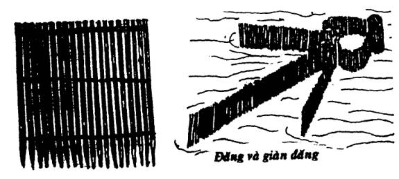
LỜ, LỢP (NÒ):
Được làm từ những thanh tre mảnh, bện lại với nhau bằng các loại dây và được cố định bằng những khung tròn hoặc vuông. Ở miệng gắn hom để cá tôm vào được nhưng không ra được
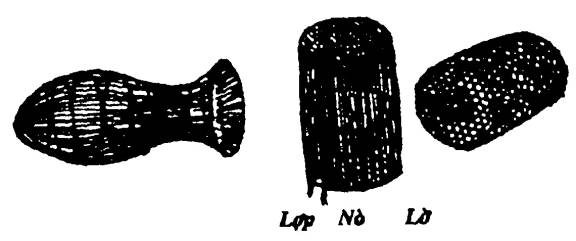
Lờ được đặt ở những giòng nước chảy. Nếu giòng nước hẹp, vừa miệng lờ, thì không cần dùng đăng, Nhưng nếu là suối, lạch, mương,… lớn, thì phải dùng đăng để ép cá vào lờ.
Đầu mùa mưa, đặt lờ để đón cá lên, nên đóng đăng theo hình chữ V ngược với giòng nước. Cuối mùa thì đặt chữ V xuôi với giòng nước, để hứng cá xuống.
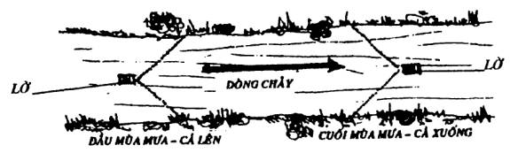
Những người có kinh nghiệm biết là những con cá tinh khôn (thường là cá lớn) sẽ không bơi vào lờ mà hoặc là phóng qua giàn đăng, hoặc là chờ đến đêm tối, sẽ trườn lên bờ, lách qua hai đầu giàn đăng để thoát thân. Cho nên họ căng một tấm lưới như mắc võng bên kia đăng để đón cá nhảy qua và đặt hai đầu đăng hai cái lợp để đón cá trườn qua. (hai đầu này, người ta thấm nước, đập đập cho cỏ nằm rạp xuống thành một “con đường mòn” để dẫn dụ cá)
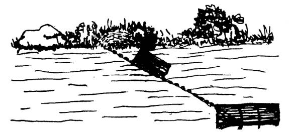
XA:
Lợi dụng tập tính đầu mùa mưa cá lên đẻ, cuối mùa mưa cá về vực. Người ta làm những giàn xa để hứng cá. Xa được làm ở những nơi có nước chảy như sông, suối, khe, mương, lạch,…
Trước tiên, người ta lấy những cây lớn đóng thành hàng cừ rất chắc chắn (nếu cần, phải đóng thêm những cây chống để có thể chịu được sức đạp của nước khi có lũ). Sau đó cặp đăng vào cừ. Trên đầu đăng, người ta làm những sàn hứng cá có độ nghiêng tập trung vào một điểm, ở điểm này, người ta chừa lỗ để đặt giỏ hứng cá. Khi cá đến giàn xa, bị đăng cản lại, theo bản năng, chúng sẽ phóng lên để vượt qua và bị rớt vào sàn hứng, tuột theo độ nghiêng để vào giỏ…
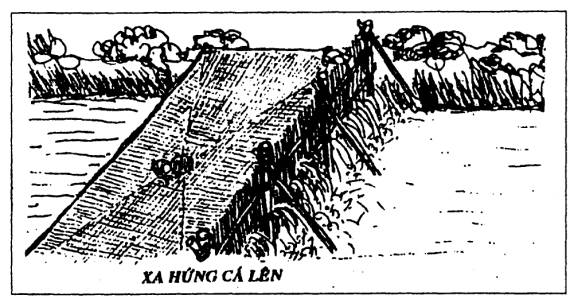
Không phải chỉ có đầu hoặc cuối mùa mưa cá mới chạy, mà cả giữa mùa, khi có những cơn mưa lớn sau 5 – 7 ngày nắng, cá cũng chạy.
Một giàn xa làm đúng quy cách, đúng địa thế, đúng thời điểm,… một ngày đêm, có thể thu hoạch vài tạ cá.
TẦM PHỘC:
Vào mùa khô, khi giòng suối gần kiệt nước, chảy lừ đừ… các bạn có thể kích thích cá chạy bằng cách đắp bờ và cho nước đổ xuống qua những bọng cây đặt nghiêng 45o. Trên đầu mỗi bọng cây, người ta chụp một cái lợp có gắn toi. Nghe tiếng nước chảy, cá sẽ bị kích thích, cố gắng vượt ngược nước và sẽ bị rơi vào lợp.
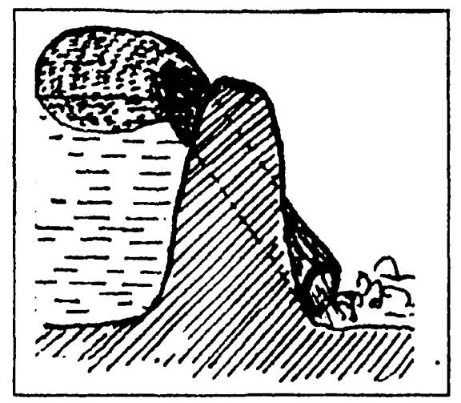
VÓ - RỚ:
Gồm có hai cây chéo để căng một tấm lưới hình vuông và một cây dài để làm cần vó. Trong những ngày có mưa lớn hay lũ lụt, người ta đem vó ra những nơi có nước chảy siết, chọn những búng nước quần lại (cá tạm nghỉ) để đặt vó. Ven sông rạch, người ta làm sẵn giàn để cất vó lớn vào những ngày có thủy triều chênh lệch lớn hay những ngày có mưa gió.
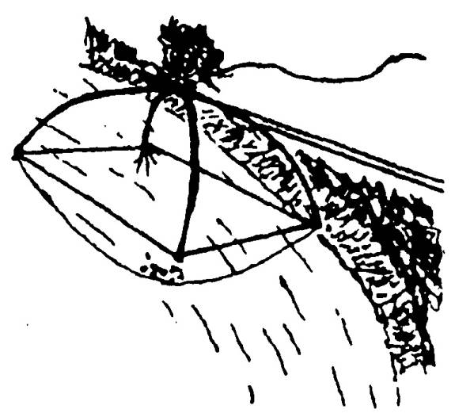
VỢT:
Hình dạng cây vợt thì ai cũng biết, nhưng để bắt cá bằng vợt thì không dễ chút nào. Ngoài việc để sẵn vợt dưới nước, nhử mồi cho cá tụ lại rồi bất ngờ vớt lên thật nhanh, các bạn còn phải biết cách ép cá vào góc, vào vũng nhỏ.
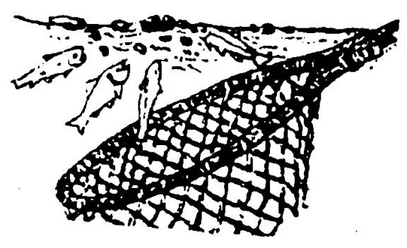
Khi không có lưới, các bạn có thể bọc khung vợt bằng nhiều lớp mạng nhện (loại nhện hùm), cũng có thể bắt được một số cá nhỏ.
NƠM:
Đây là một dụng cụ đánh bắt rất phổ biến trong các vùng nông thôn Việt Nam. Nơm được bện bằng tre và mây (hoặc các loại dây). Dùng để kết hợp với đèn đi soi vào ban đêm, hay đi nơm ban ngày. Người ta dùng nơm để bất ngờ chụp vào những nơi nghi là có cá (hay các loại động vật ở dưới nước) ẩn núp, rồi bắt bằng tay.
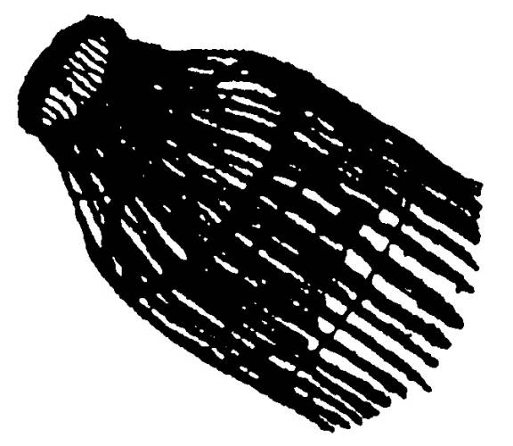
CÂU:
Điều kiện tối thiểu để câu cá là các bạn phải có lưỡi câu và dây câu. Nếu không có, các bạn phải biết cách chế tác bằng các vật liệu mà các bạn có thể kiểm được như gỗ, kẽm, xương, đinh,… và các loại dây rừng
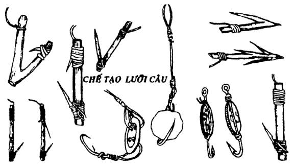
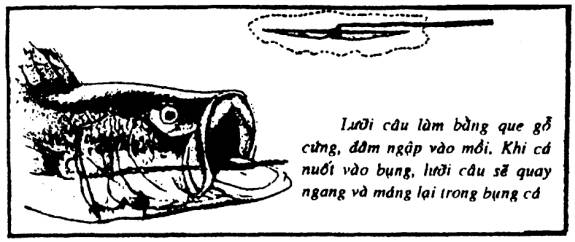
Khi đã có lưỡi câu và dây rồi, thì các bạn phải có mồi câu. Mồi có thể là nhái, giun, dế, cào cào, tôm tép, trứng kiến, cua đồng, ruột thú, cá nhỏ,… Tùy theo cách câu và loại cá các bạn định bắt mà móc mồi. Có những loại mồi chúng ta phải để còn sống dùng câu các loại cá dữ chuyên săn mồi sống như cá lóc, cá chẻm,… hoặc phải để mồi cho thối để câu các loại cá như cá trê, lươn,… Khi móc mồi, các bạn cố gắng nguỵ trang che dấu lưỡi câu.
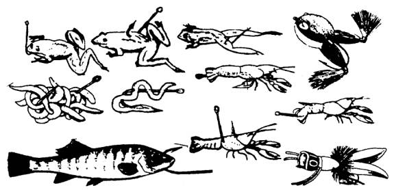
Các cách câu thông thường là: câu phao, câu rê, câu giăng, câu cắm, câu nhắp,…
Câu phao:
Vật dụng gồm có: cần, dây, lưỡi, phao, chì và… mồi. Đây là cách câu phổ thông nhất, dễ dàng nhất. Ngay cả những người chưa bao giờ câu, cũng có thể câu được. Nhưng để câu cho có hiệu quả cao, các bạn phải biết chọn mồi cho thích hợp với loại cá bạn định câu và phải biết cách điều chỉnh phao sao cho phù hợp với độ sâu của nước, đây cũng là một hình thức thư giãn khi nhàn rỗi.
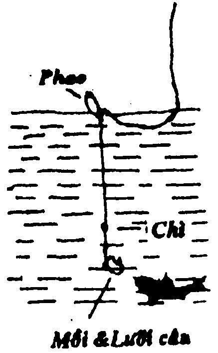
Câu rê:
Cách câu này đòi hỏi một số kỹ thuật và kinh nghiệm, nên có vẻ chuyên nghiệp hơn. Nếu có tiền và phương tiện thì người ta sắm cần câu máy, còn nếu không, các bạn chỉ cần một cành trúc, một vòng gỗ cuộn dây, một sợi dây tốt và một lưỡi câu. Các bạn cũng phải học cách móc mồi sao cho mồi đừng mau chết, cách quăng mồi sao cho xa mà không vướng, cách cuốn dây kéo mồi sao cho tự nhiên… vì cách câu này thường bắt được cá lớn, cá ăn mồi sống, nên chọn mồi cũng là một khâu quan trọng.
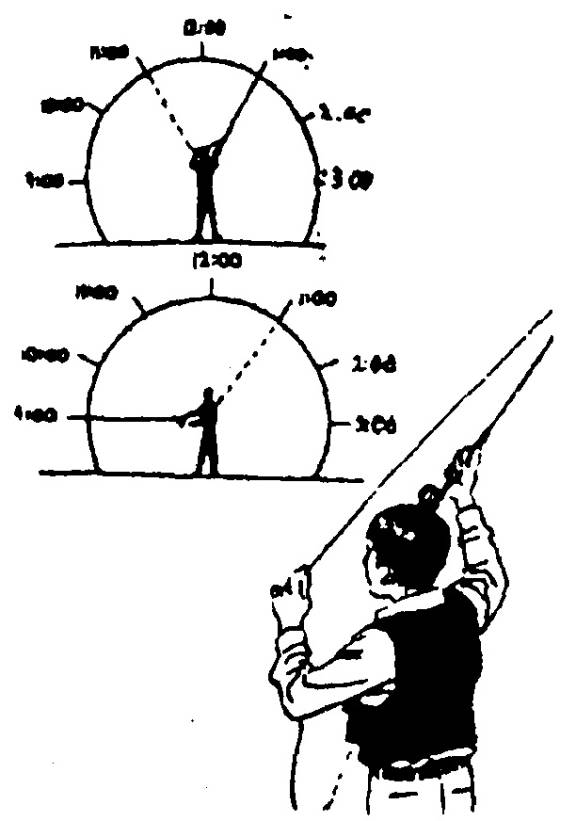
Câu cắm
Cách câu này muốn có “năng suất” thì các bạn nên làm nhiều cần (khoảng 50 cần là vừa sức). Mỗi cần dài từ 0.7 đến 1 mét. Trước khi trời tối, các bạn móc mồi đem cắm ven bờ sông, suối, ao, hồ,… Khi cắm xong cần cuối cùng là các bạn có thể đi thăm lại cần đầu để thu hoạch hay thay mồi.
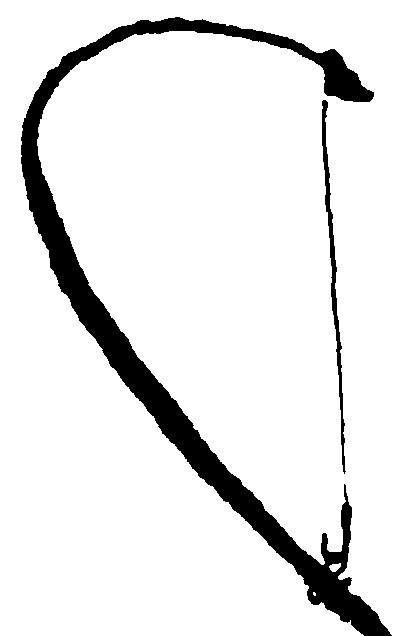
Câu giăng:
Cũng giống như câu cắm nhưng thay vì cần câu, người ta buộc nhiều lưỡi câu vào một sợi dây có gắn phao, thay vì cắm ven bờ thì người ta thả giữa giòng nước.
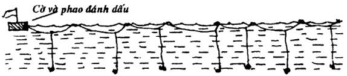
Câu bật tự động:
Giống như câu cắm, nhưng người ta làm một chốt bật tự động (như hình minh họa) để cho lưỡi câu cắm sâu hơn làm cá khó bị sẩy.
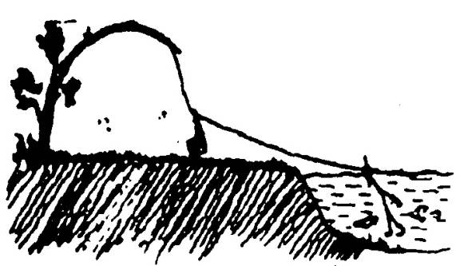
Câu nhắp:
Cách câu này thường dùng để câu ếch, cóc, nhái, bù tọt,… Người ta thường móc mồi, rồi nhắp theo ven các bờ ao, hồ, đầm lầy,… rất dễ dàng có kết quả, vì loài lưỡng cư này khá dạn dĩ. Nếu không có lưỡi câu, các bạn chỉ cần cột chặt mồi và kèm theo một cái vợt. Khi ếch cắn mồi, bạn chỉ cần dỡ nhẹ lên, đồng thời đưa vợt ra hứng. Khi ếch nhả mồi sẽ bị rơi vào vợt.
SOI
Nếu các bạn có đèn pin và pin dự phòng hoặc đèn pin bóp tay không cần pin (hand dynamo flashlight) thì quá tốt. Bằng không, các bạn phải làm một cây đuốc (Đuốc có thể làm bằng bùi nhùi tẩm nhựa thông, dầu rái, dầu mù u, mỡ động vật, …), hoặc đèn bão hay bất cứ một loại đèn nào. Lấy một miếng thiếc hay vỏ cây tươi che bớt một bên.
Trời vừa sụp tối là các bạn đi đến những lỗ trổ, khe nước chảy, các vũng nước, ven sông, suối, ao, hồ, bờ biển,… Dưới ánh sáng của ngọn đuốc, các bạn có thể gặp đủ thứ động vật mà chúng ta có thể làm thực phẩm như: chim, cá, cua, lươn, rắn, rùa, cóc, ếch,… (vào những cơn mưa lớn đầu mùa, ếch từ trong hang ra “bắt cặp”, các bạn chỉ có việc lần theo tiếng kêu, đến lượm bỏ vào giỏ)
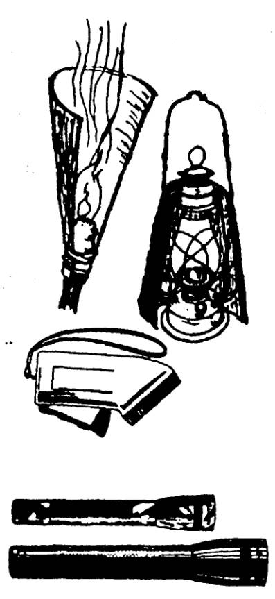
Đi soi, các bạn có thể bắt bằng đủ mọi cách mà bạn có được như: nơm, chặt bằng dao, đâm bằng chĩa, chụp bằng vợt, đập bằng cây, bắn bằng tên,… thậm chí bắt bằng tay.
TÁT:
Đang giữa mùa mưa mà gặp thời kỳ nắng hạn (như “hạn bà chằn” vào khoảng tháng 7 tháng 8 âm lịch). Các bạn tìm đến những vũng nước nhỏ, sẽ thấy vô số cá bị mắc cạn ở đó. Chỉ cần be (đắp) bờ, tát cạn, tha hồ mà bắt. Vào mùa khô, những ao hồ có nước quanh năm, thường là nơi hội tụ đủ loại cá. Tuy nhiên, những nơi như thế, muốn tát cạn phải tốn rất nhiều công sức.
ĐẶT TRÚM:
Là một phương pháp dùng để bắt lươn. Trúm là một ống tre lớn được thông mắt, (hoặc bất cứ vật liệu gì hình ống) có đường kính từ 40 – 60 mm, dài khoảng 0.8m – 1.2 m. Một đầu bịt kín (có dùi một vài lỗ nhỏ để thông hơi). Một đầu gài toi (hom).
Trước khi đem đi đặt, các bạn đào bắt một mớ giun đất, hay bắt cua đồng băm nhuyễn (có thể cho thêm ít cám rang) rồi trét lên toi hoặc bỏ mồi vào trong trúm để nhử. Buổi chiều đem đi đặt ở những nơi lươn thường lui tới, sang hôm sau thì đi thu hồi.
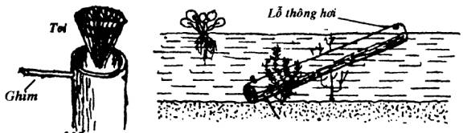
Khi đặt, ghim đầu có toi sát đáy, dằn lên ít rơm hay cỏ mục. Phía đầu bịt kín (có lỗ thông hơi) ló lên khỏi mặt nước, để khi lươn vào trúm, còn có không khí mà thở. Nếu không, lươn sẽ chết ngợp hoặc phá toi mà ra.
Tùy theo con nước, nếu gặp vùng có lươn, các bạn chỉ cần làm chừng chục ống, là sẽ có một nguồn thực phẩm “dư ăn dư để”.
DUỐC (THUỐC) CÁ:
Trong thiên nhiên hoang dã, có rất nhiều cây có chất độc. Nếu giã nát hay băm nhỏ, đổ xuống ao, hồ, sông, suối,… thì cá sẽ nổi lên, chúng ta có thể bắt ăn mà không sợ bị tác hại.
Những cây duốc cá chúng ta thường gặp ở rừng núi Việt Nam là: thàn mát, niệt gió, xương khô, chẹo, hạt củ đậu, hột mát, ô đầu,…
Thàn mát:
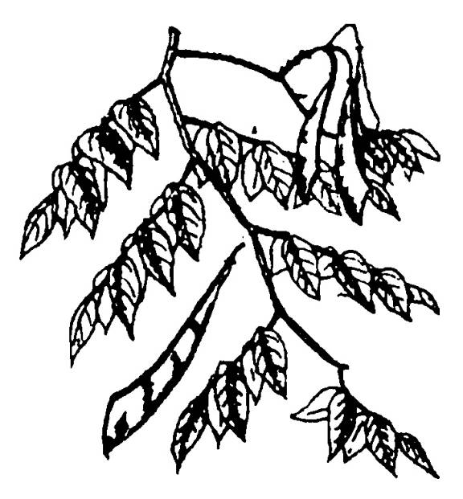
Thàn mát là một loại cây to, cao từ 5 – 10 mét, trái có hình dạng con dao mã tấu. Cây mọc hoang ở các tỉnh miền thượng du nước ta như Hà Tây, Hòa Bình, Nghệ An, Thanh Hóa, Bắc Thái. Một vài nơi ở Hà Nội có trồng để lấy bóng mát.
Người ta lấy hạt thàn mát tán nhỏ, trộn với tro bếp, rắc vào giòng nước suối đã ngăn lại, cá sẽ chết.
Cổ giải:
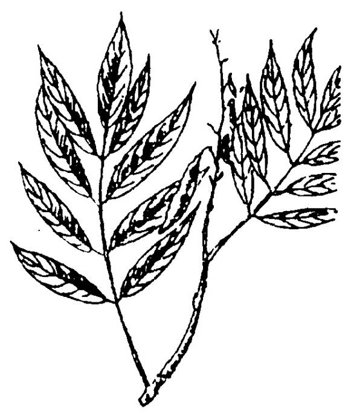
Cổ giải là một loại cây gỗ lớn, cao từ 10 – 12 mét. Mọc hoang tại các vùng núi đá vôi ở Ninh Bình, Hà Nam, Vĩnh Phú, Chiêm Hóa,… Đôi khi còn thấy mọc ở núi đất.
Người ta dùng vỏ cây tươi (vỏ khô ít hiệu quả) giã nát để duốc cá (nếu trộn vào cơm hay cháo, có thể dùng làm thuốc diệt ruồi).
Ba đậu (ba nhân, mần để, cây đết)
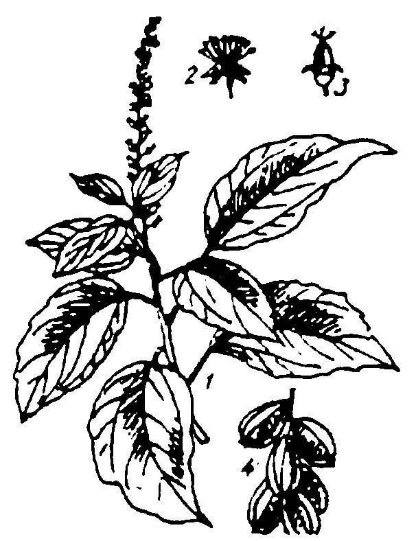
Là một cây nhỡ, cao tầm 3 – 6 mét, cành nhẵn (xin đừng lầm với cây ba đậu gai hoặc cây ba đậu cọc rào có nhiều ở miền Nam nước ta). Cây mọc hoang và được trồng ở nhiều tỉnh miền Trung và miền Bắc nước ta, cây còn mọc ở Trung Quốc và một số nước lân cận. Khi cần duốc cá, người ta giã nát hạt ba đậu đổ xuống nước.
Cây hột mát (cây xa, thàn mát):
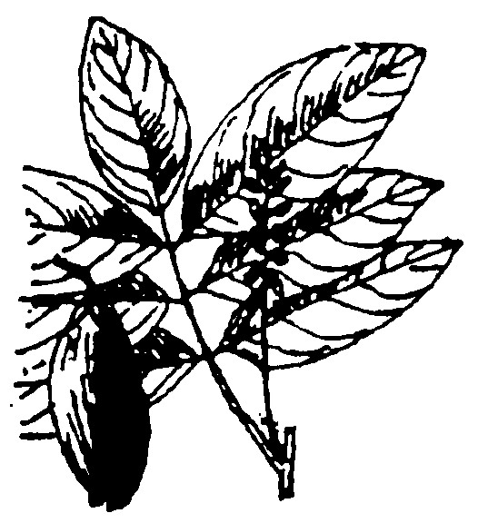
Là một cây to, cao từ 8 – 25 mét. Mọc hoang nhiều trong các miền rừng núi Việt Nam, nhưng mọc và được sử dụng nhiều nhất ở Nam Bộ và Nam Trung Bộ. Người ta dùng hạt tán nhỏ, cho xuống nước, cá ngộ độc sẽ nổi lên, chúng ta có thể vớt lên ăn mà không sợ bị tác hại
Cây chẹo (cây cơi, hoàng khởi)
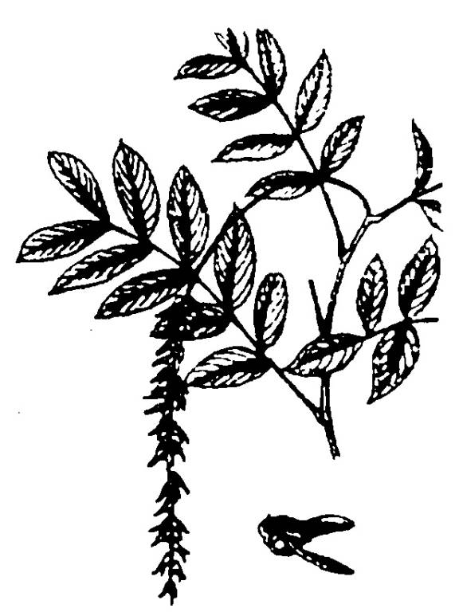
Chẹo là một cây nhỡ, cao chừng 8 mét, cành lá mềm yếu. Mọc hoang khắp các miền rừng núi nước ta, kể cả miền Trung và miền Bắc. Còn mọc ở Malaysia, Lào và miền Tây Nam Trung Quốc.
Người ta dùng vỏ và lá của cây chẹo giã nát, cho vào nước suối (đã ngăn) để duốc cá.
Mắc Ken (bàm bàm)
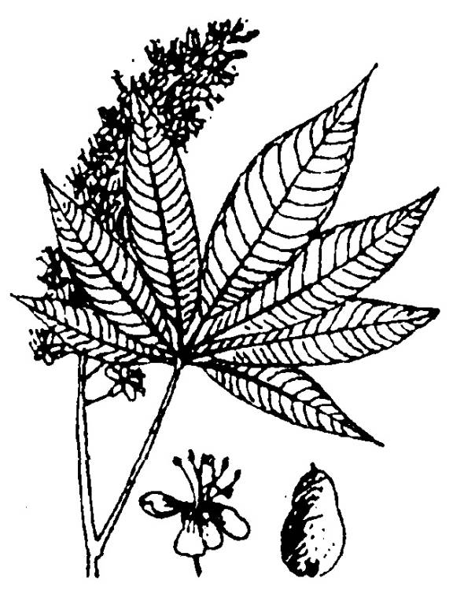
Là một cây nhỏ, cao từ 3 – 5 mét. Lá kép chân vịt có cuống chung. Mắc ken mọc hoang và được trồng tại một số tỉnh miền Bắc nước ta, nhiều nhất là tại những vùng có núi đá vôi như: Lạng Sơn, Hoà Bình, Bắc Thái,… Còn mọc ở Lào và Nam Trung Quốc.
Người ta dùng vỏ cây mắc ken giã nát để duốc cá.
Xương khô (cành giao)
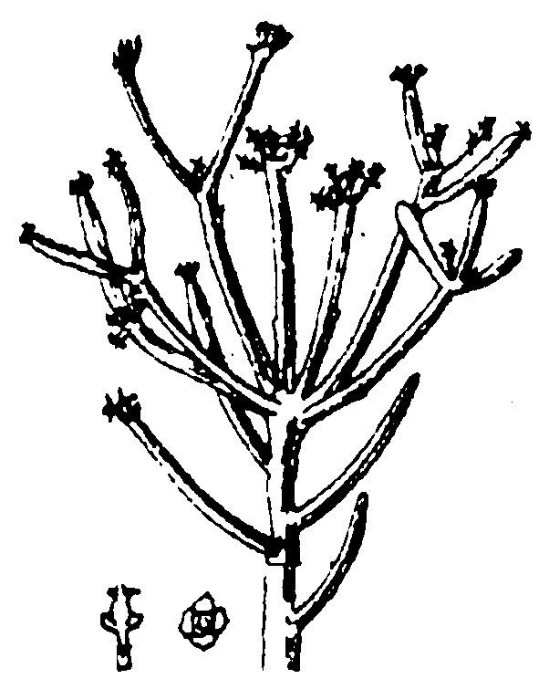
Là loại cây nhỡ, có thể cao từ 4 – 7 mét, cành nhiều, nhỏ, màu xanh, chỉ mang một ít lá nhỏ. Thoáng nhìn, người ta có cảm tưởng là một cây không có lá. Hiện nay, cây được trồng khắp nơi để làm cảnh hay hàng rào (người ta cho rằng, ai bị nhựa bắn vào mắt sẽ bị mù). Tại Ấn Độ, Philippin, Malaysia,… người ta đập nát cành cây này để duốc cá.
Niệt gió(độc ngư đằng, gió cánh)
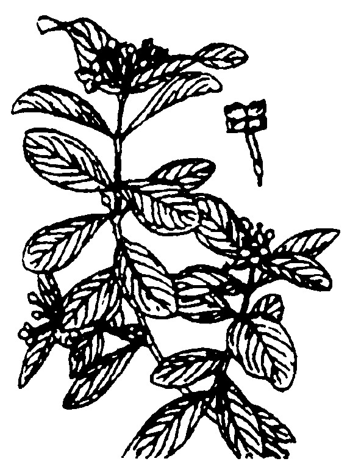
Niệt gió là một loại cây nhỏ, quanh năm xanh tươi, cao từ 0.30 – 0.60 mét. Cây mọc hoang khắp rừng núi, bụi bờ ở nước ta và một số nước trong vùng Đông Nam Á. Người ta đập nát cành và lá cây này thả xuống nước để duốc cá
Mướp sát (sơn dương tử)
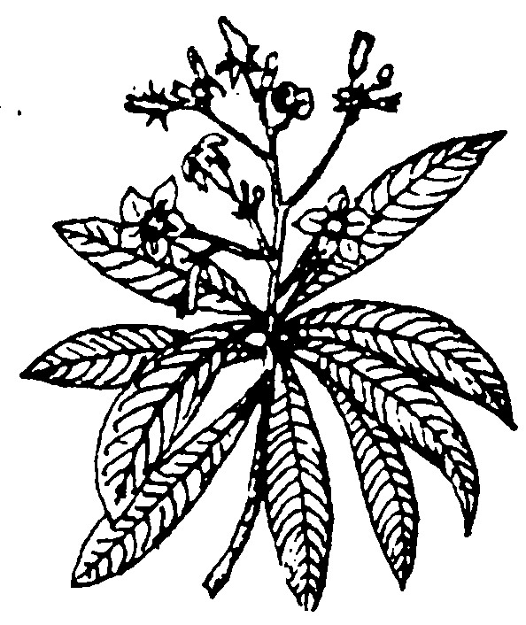
Là một loại cây nhỏ, cao từ 4 – 6 mét, mọc hoang ở những vùng ẩm ven biển miền Trung và miền Nam nước ta. Cành thô to, có vỏ xù xì, thân có mủ trắng, hoa trắng, thơm, mọc thành xim. Lá mốc le, tập trung ở đầu cành. Quả hạch, màu đỏ, to bằng trứng gà. Người ta nghiền nát hạt để duốc cá.
Củ đậu (củ sắng, sắn nước)
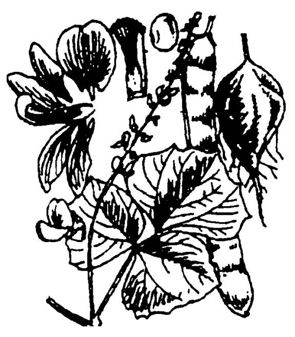
Cây củ đậu là một loại dây leo, có rễ củ hình con quay lớn. Là một loại cây được trồng khắp nơi trong nước, từ đồng bằng cho đến miền núi, để lấy củ ăn. Nhưng lá và hạt có chất độc.
Người ta giã nát hạt cây củ đậu để duốc cá và trừ sâu bọ.
Và còn rất nhiều loại cây duốc cá khác tùy theo kinh nghiệm của từng địa phương mà chúng tôi không thể kể hết.
CÁC CÁCH ĐÁNH BẮT BẰNG LƯỚI
Đánh bắt tôm cá bằng lưới là một phương pháp đánh bắt có hiệu quả nhất, nhưng không phải lúc nào các bạn cũng có sẵn hoặc có thể chế tạo được những tay lưới có quy cách và kích thước vừa ý. Nhưng nếu được chuẩn bị từ trước, thì các bạn không lo thiếu thốn thực phẩm. Có rất nhiều phương pháp đánh bắt bằng lưới với nhiều kiểu lưới khác nhau, những phương pháp dưới đây giản dị, hiệu quả và may ra có tính khả thi.
Lưới giăng:
Là một tay lưới bén (bằng sợi mảnh và có mắt lưới nhỏ). Có thể dài từ vài chục mét cho đến hàng trăm mét, rộng từ 0.4 – 1 mét. Dây viền trên có gắn phao, dây viền dưới gắn chì. Lưới giăng chỉ có hiệu quả khi có mưa lớn, lũ lụt hay thủy triều chênh lệch cao,… Nếu không sau khi thả lưới, các bạn phải khuấy động cho cá hoảng sợ, chạy vọt vào lưới.
Lưới kéo - Lưới bao
Gần giống như lưới giăng, nhưng dạo (chiều rộng) cao hơn. Sợi lưới và phao lớn hơn. Chiều dài tùy theo khả năng, nhưng cũng vài chục mét trở lên.
Người ta thường chờ khi nước thủy triều lên, thì đem lưới ra ven bờ sông, bờ biển,… chọn nơi có cá (bằng kinh nghiệm), rồi bủa lưới bao và kéo dần vào bờ.
Khi kéo ở những vùng sình lầy, có nhiều loại cá hay trốn dưới bùn, người ta làm thêm những cái túi ở đường viền chì, gọi là lưới túi.
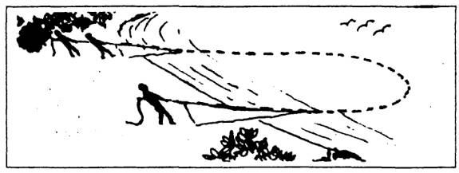
Trủ - Đáy
Hai loại hình này giống nhau, nhưng trủ thì nhỏ hơn và chỉ đánh ở suối, mương, lạch,… có nước chảy mạnh, còn đáy thì đánh ở sông.
May ra thì chúng ta có thể làm được một cái trủ nhỏ, chừng đó cũng đủ cho chúng ta tự túc được thực phẩm. Còn đáy thì xin đừng mơ tới, vì nó đòi hỏi rất nhiều nguyên vật liệu và công sức.
Các bạn chọn một khúc suối (hay mương, lạch, …) nước chảy thông, thẳng, đáy bằng phẳng. Đóng cừ, bện đăng, chừa một cửa vừa bằng miệng trủ. Khi có biến động thời tiết (lũ lụt, đang nắng lâu mà đổ mưa, đang mưa dầm mà nắng hạn, trời trở gió, …) thì các bạn gắn trủ vào, bảo đảm các bạn sẽ trúng to. Nếu các bạn biết kết hợp trủ với xa và lợp thì… hết biết.
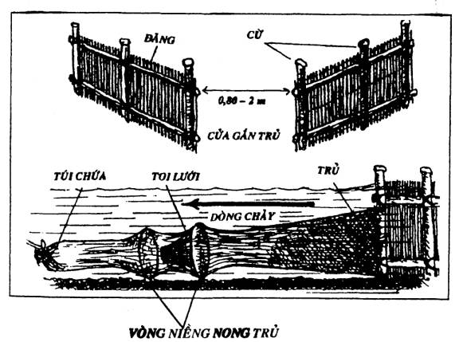
CÁC CÁCH ĐÁNH BẮT KHÁC
Te bộ - Nhủi
Lấy hai cây tre dài khoảng 2 – 3 mét, đóng ghép thành hình chữ X, một đầu dài, một đầu ngắn. Đầu dài có gắn một tấm lưới, hai bàn trượt ở đầu sào và một sợi dây giới hạn độ bẹt của sào. Đầu ngắn dùng để chịu vào người mà đẩy tới. Các bạn nên từ ngoài đẩy thẳng vào bờ hay vào những mương lạch cụt, nơi nghi ngờ có tôm cá ẩn núp. Thường thì cách này chỉ đánh bắt được tôm cá nhỏ, nhưng khá nhiều.
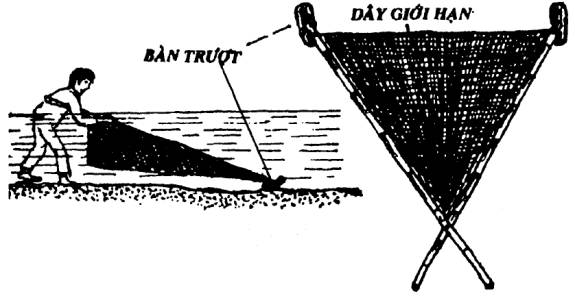
Kè đá
Nếu các bạn đang ở dọc theo bờ biển, hãy chọn một vũng nước mà khi thủy triều xuống, sẽ rút cạn hay chỉ còn lại rất ít nước. Các bạn lấy đá làm thành một bờ kè thấp ngăn giữa biển và vũng nước. Khi thủy triều lên tràn ngập, cá sẽ lên theo, khi thủy triều xuống, một số cá sẽ bị kẹt lại.
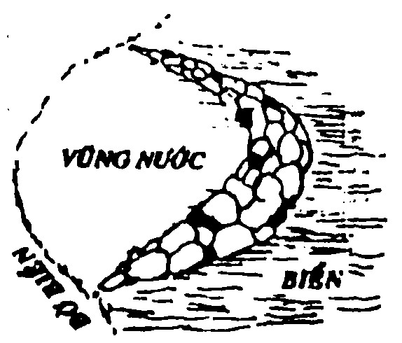
Nếu các bạn biết cách thay thế kè đá bằng một giàn đăng hay lưới thì sẽ tuyệt hơn.
Rập cua – Câu cua
Các bạn lấy hai thanh tre dài từ 0.7 – 1 mét, ghép chéo nhau thành chữ X, để căng một tấm lưới vuông, có mắt lưới lớn, cạnh khoảng 60 cm. Buộc vật nặng vào thanh tre cho rập dễ chìm. Cột rập bằng một sợi dây nối liền với một cái phao dễ thấy. Cột một miếng mồi lơ lửng giữa khung và lưới. Đem thả rập ở ven bờ có nước sâu khoảng 1 mét (Mồi là những con vật chúng ta tìm thấy trong khu vực như rắn nước, cá,… chặt thành từng khúc)
Nếu có khả năng, các bạn nên làm khoảng 10 cái rập để thả dọc theo bờ sông, lạch, đầm,… nước lợ. Khi đi thăm, các bạn cầm theo cái sào móc, móc vào dây phao kéo lên. Cua rất ham mồi, khi kéo lên khỏi mặt nước mới chịu buông ra, nhưng lúc đó lại rớt xuống lưới.
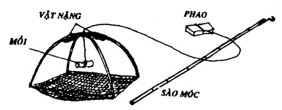
Giản dị nhất là các bạn buộc mồi vào một cái cần dài khoảng 1.5 – 2 mét (không rập, không lưỡi). Đem cắm những nơi cua thường lui tới. Khi đi thăm, các bạn cầm theo một cái vợt cán dài. Các bạn dỡ nhè nhẹ cần câu lên, nếu thấy hơi nặng thì phải chuẩn bị. Khi mồi lên gần tới mặt nước, nếu thấy cua bám theo thì nhanh tay dùng vợt xúc ngay, vì nếu kéo lên khỏi mặt nước, hoặc thấy bóng dáng của bạn, cua sẽ buông mồi và lặn ngay.
Rập chim
Đây là một phương pháp đánh bắt khá hiệu quả đối với các loại chim và một số thú nhỏ. Trước tiên, các bạn phải có hai tấm lưới, tùy theo khả năng và các loại chim các bạn dự tính đánh bắt (chim nhỏ thì mắt lưới nhỏ và kích thước lưới cũng nhỏ. Chim lớn thì mắt lưới lớn và kích thước cũng lớn hơn). Các bạn có thể làm những tấm lưới dài từ 5 – 15 mét, rộng từ 1 - 2.5 mét. Trên và dưới chân lưới cặp dây viền thật chắc. Hai đầu mỗi tấm lưới buộc hai cây sào nhỏ cao bằng chiều cao của lưới. Trên đầu sào xa thì buộc dây ốc, dài gấp rưỡi cây sào. Trên đầu sào gần thì buộc dây lèo (dây giựt), dài bằng 3 – 5 lần cây sào. Dưới mỗi chân sào đều có một vòng dây để tròng vào cọc.
Cách cài đặt
Các bạn trải lưới dài ra, đầu lưới này úp lên đầu lưới kia khoảng 10 – 30 cm. Kéo căng lưới đóng cọc 4 góc của 4 chân sào. Kéo hết tầm dây ốc, đóng cọc thẳng hàng với 2 cọc của chân sào (những người có kinh nghiệm, người ta đóng chệch vào trong độ 1 tấc). Mở lưới ra và kéo 2 sợi dây giựt về phía định làm thum (chòi) ẩn nấp (xem hình minh họa)
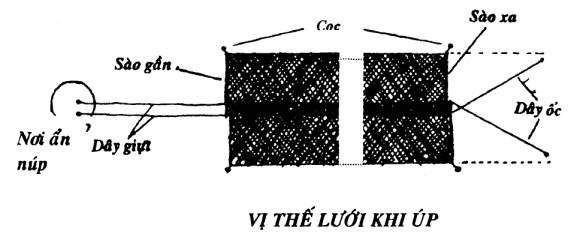
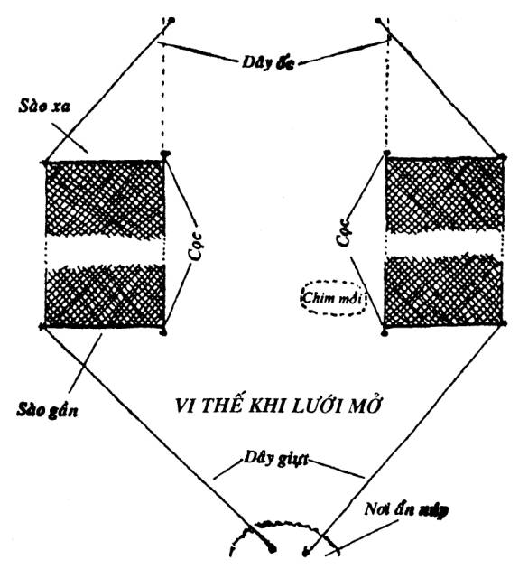
Kỹ thuật đánh rập
Nếu các bạn đánh chim đi ăn, thì cần có một vài con mồi cột sẵn ở trong lưới. Nhưng nếu đánh chim đi uống nước, nhất là tháng khô hạn, thì có thể không cần. Khi chim đổ xuống lưới, tùy theo kinh nghiệm và sự phán đoán của bạn để giựt khi chúng còn chưa chạm đất hay đã đậu rồi. Khi giựt, làm sao cho hai tay lưới gần như úp lại cùng một lúc để chim không thoát được.
Đâm cá bằng chỉa
Nếu chưa bao giờ sử dụng chỉa để đâm cá, chắc chắn các bạn sẽ đâm trượt. Đó là do hình ảnh của con cá khi đi qua nước đã bị khúc xạ, làm cho các bạn thấy hình như xa hơn, trong khi con cá ở gần bạn hơn một chút. Cho nên khi đâm, các bạn đừng phóng ngọn lao thẳng vào hình ảnh mà bạn thấy, mà phóng chệch về phía trong bạn một tí.
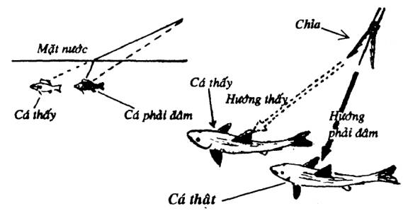
Giựt bằng thòng lọng
Các bạn có thể dùng một sợi dây nhỏ, chắc, làm thành một cái thòng lọng, cột một đầu vào cành cây (như cần câu). Với những cử động nhẹ nhàng, các bạn có thể giựt một số loài bò sát như: thằn lằn, cắc ké, rắn,… thậm chí cả cá bống kèo, bống sao,…
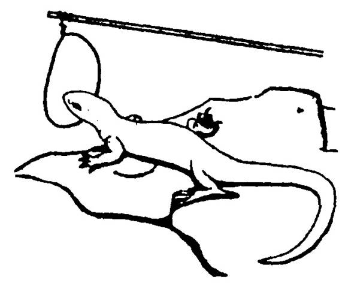
Bẫy nhông (giông)
Là một loài bò sát rất phổ biến, chúng sống ở khắp nơi, ở những đụn cát ở ven biển, đồng cỏ, rừng chồi, trảng trống,… nhưng chúng không sống trong rừng rậm. Đây là một loài bò sát rất dễ đánh bắt và cho thịt rất ngon.
Các bạn cắt một số ống trúc hay vật liệu hình ống, rộng độ 3 – 4 cm, dài độ 4 – 5 cm (nếu không có, các bạn có thể cuộn bằng giấy cứng, da, nhựa dẻo, nhôm, thiếc, …) rồi làm một số bẫy như hình minh họa. Đem cắm trước các hang của nhông, các bạn sẽ có một nguồn thực phẩm dồi dào.
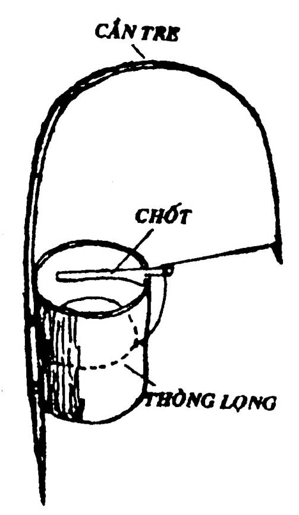
Dùng mủ hay nhựa cây
Các bạn có thể dùng mủ hay nhựa của cây da, mít, mù u, cồng cộng,… nấu lại với nhau, đem bôi lên những cành cây mà chim thường về kiếm ăn. Bị dính mủ, chim sẽ giẫy giụa. Nhưng càng giẫy giụa thì càng bị dính và rơi xuống. Các bạn chỉ việc lượm.
Và còn rất nhiều phương pháp đánh bắt khác nhau, tùy theo từng vùng, từng loại thú. Mà trong một chương mục, chúng tôi không thể trình bày hết được. Nhưng nếu các bạn nắm bắt được những phương pháp cơ bản đã đề cập tới trong chương này. Thì chúng tôi tin rằng: các bạn có thể sinh tồn nơi hoang dã.